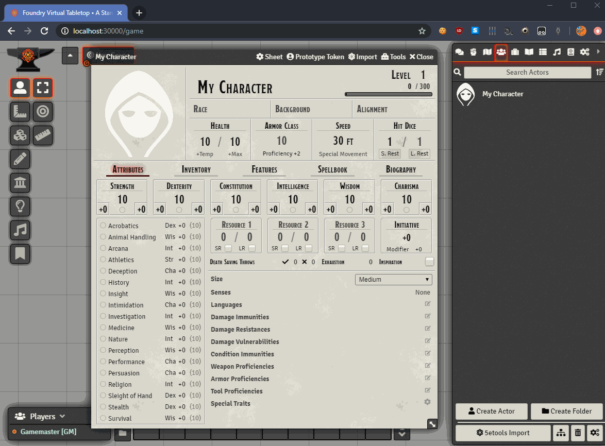
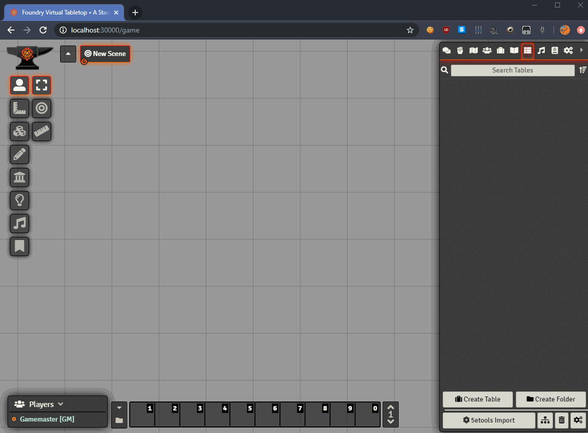
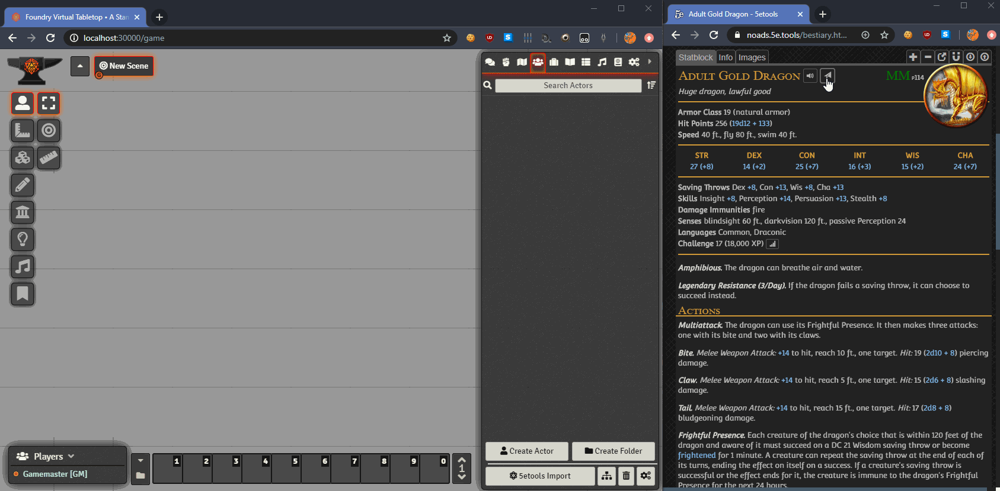
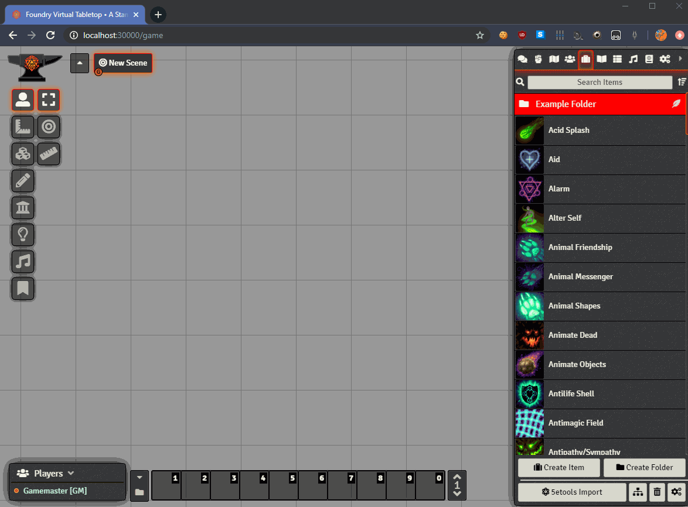
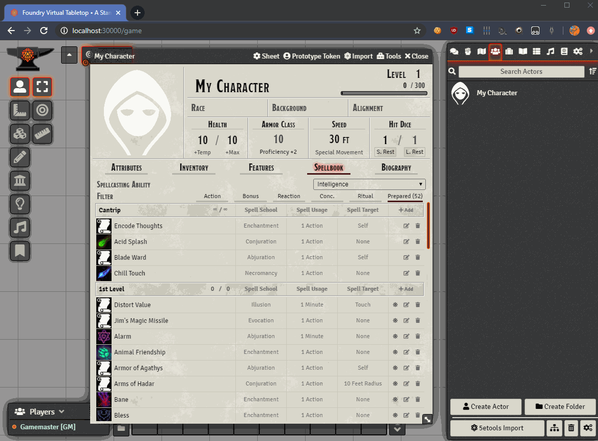
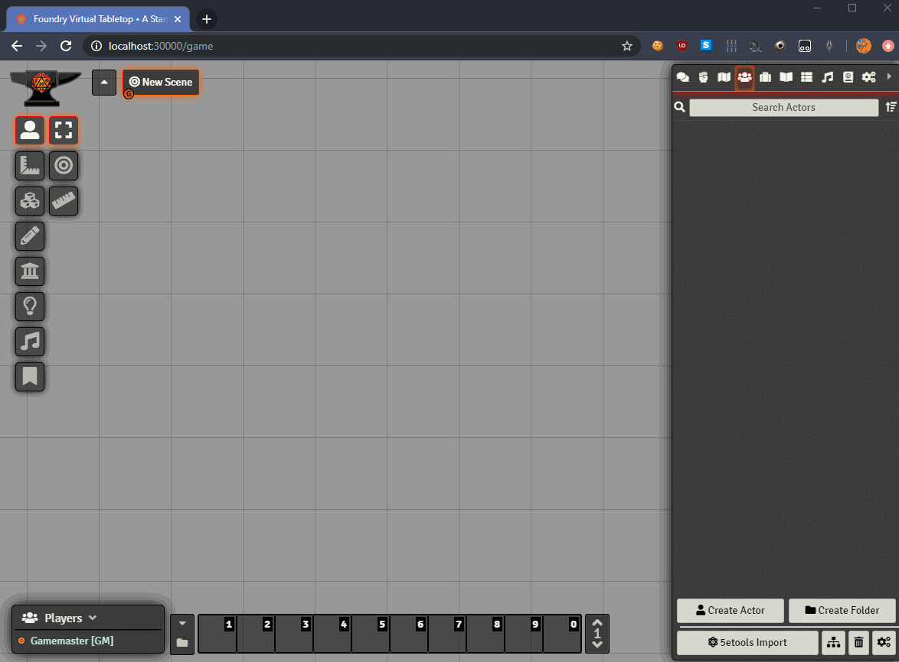
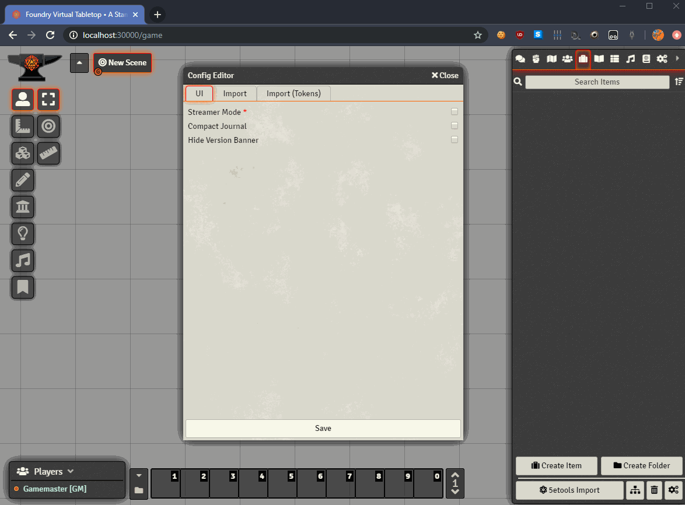

An overview of the features available in Plutonium can be found below. To those familiar with our now-deprecated Roll20 script "betteR20," we aim to expand on the feature set it provided, while improving user experience.
Please note that the GIFs on this page are updated much less frequently than the module itself. For a (more) complete list of Plutonium's features, see the wiki.
Importing
The module can import the following data to either the journal or directly to character/NPC sheets:
- Adventures
- Backgrounds
- Books
- Classes and Subclasses
- Conditions & Diseases
- Creatures (to the journal only)
- Feats
- Items
- Optional & Variant Rules (to the journal only)
- Psionics
- Races
- Spells
- Tables (to the journal only)
By default it imports data from 5etools, but also provides options to import from the homebrew repository, URLs, and file uploads.
Importing Creatures to the Journal

Importing Spells to a Character Sheet
Importing Tables
Rivet Browser Extension
With Rivet installed, and provided you have 5etools and Foundry open in the same browser, you can send content and rolls from 5etools straight to your Foundry game with the click of a button.
Send to Foundry
Art Browser
The Art Browser is integrated into the module, allowing tiles, tokens, and scenes to be drag-dropped from the vast collection available. Note that art can be drag-dropped from the Art Browser site itself with the same functionality.
Scene Creation

Quality of Life Tools
The module includes a selection of tools to streamline the VTT experience.
Journal Cleaner

Journal Bulk Item Mover
Mass "Spell Prepared" Toggler
Customization Options
Plutonium is designed to be easily configurable, and already contains a small selection of options enable user customization.
Import Folder Specification
Configuration Options
Foundry UI Enhancements
While overhauling the Foundry user experience is not one of Plutonium's goals, a few minor tweaks have been included. These include:
- The ability to close notifications ("toast" messages)
- Red colorization of "Delete" icons, improving glance value